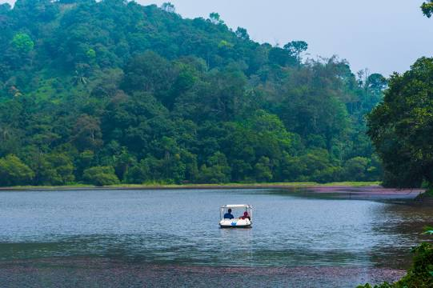

IMPORTANT TOURIST PLACE IN WAYANADU::

Pookode Lake
Pookode Lake is a scenic freshwater lake in the Wayanad district in Kerala, South India. A major tourist destination in the district, Pookode is a natural freshwater lake nestling amid evergreen forests and mountain slopes at an elevation of 770 meters above sea level. It is 15 km away from Kalpetta.
Kuruwadweep
Kuruvadweep or Kuruva Island is a 950-acre protected river delta. It comprises three densely wooded uninhabited islands and a few submergible satellite islands, which lies on the banks of the tributaries of Kabini River in the Wayanad district, Kerala, India